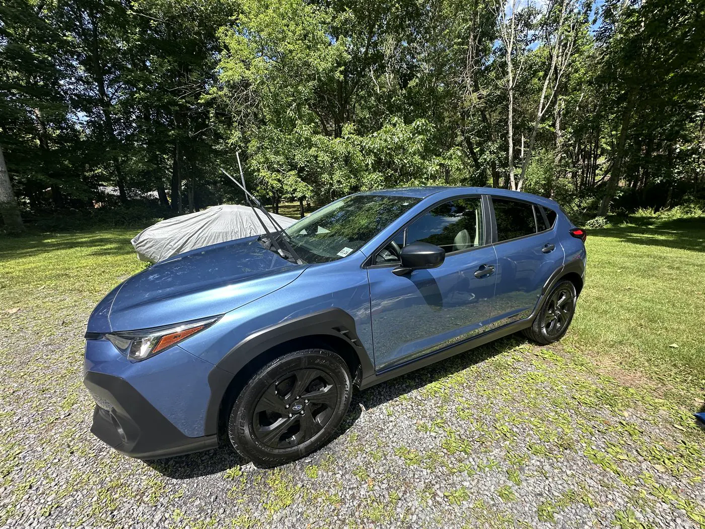
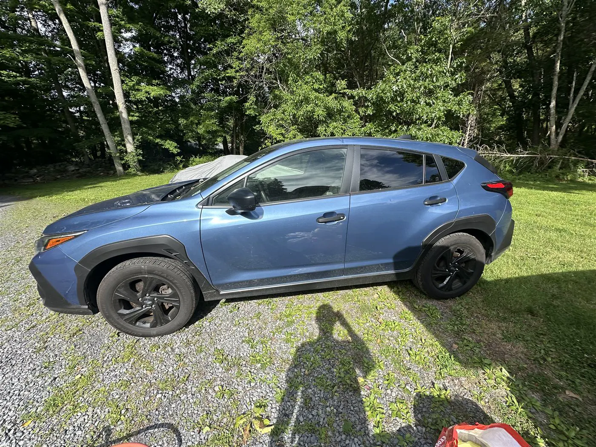
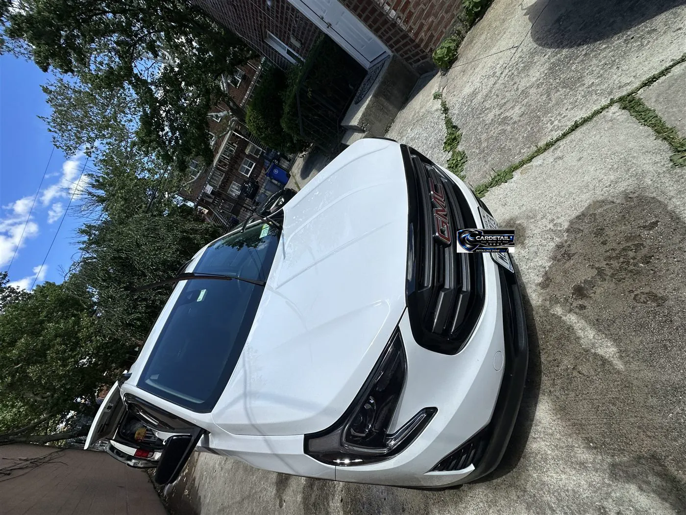
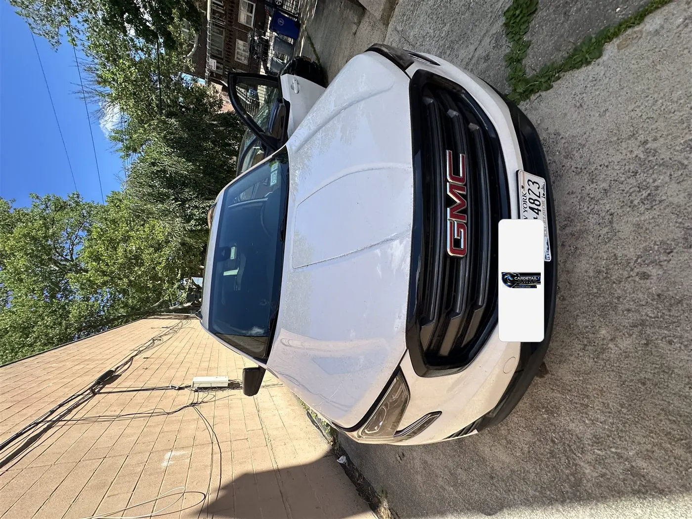
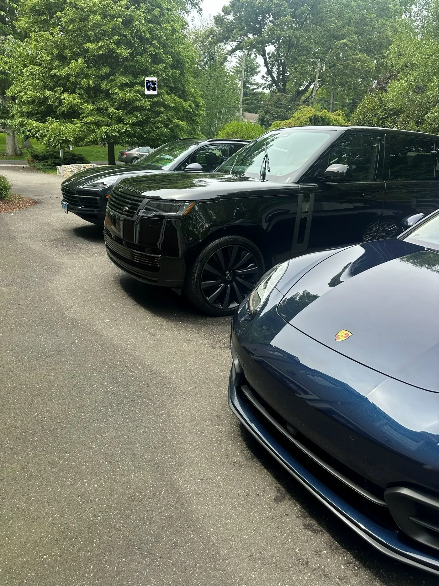
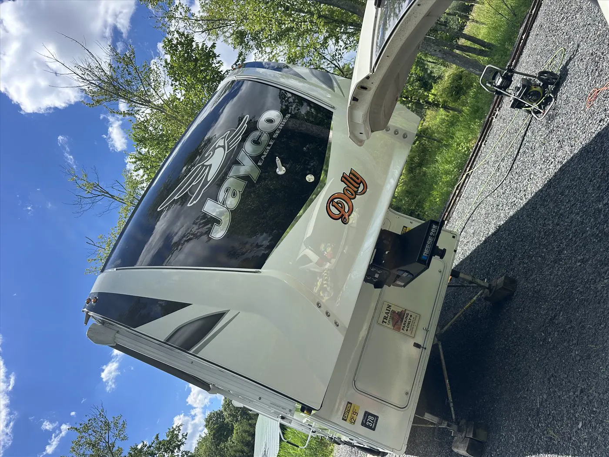
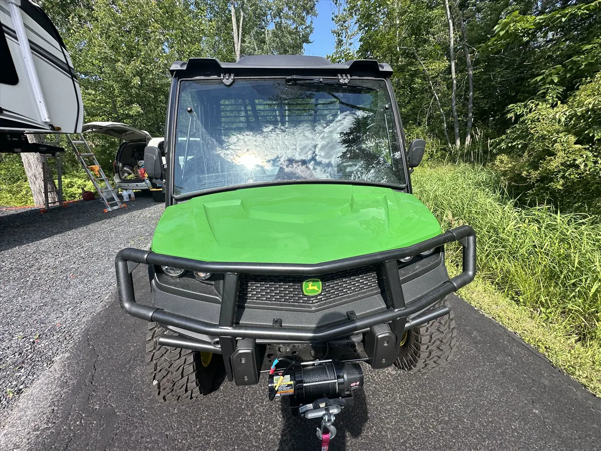
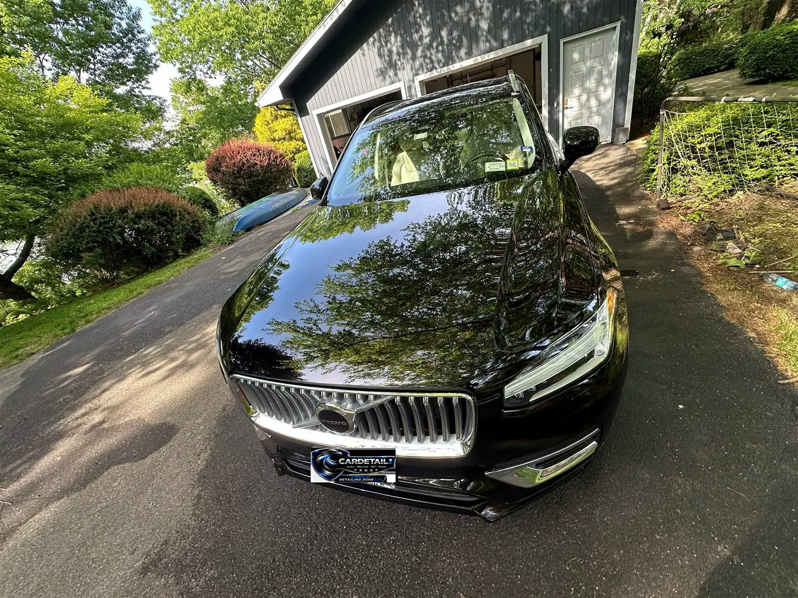
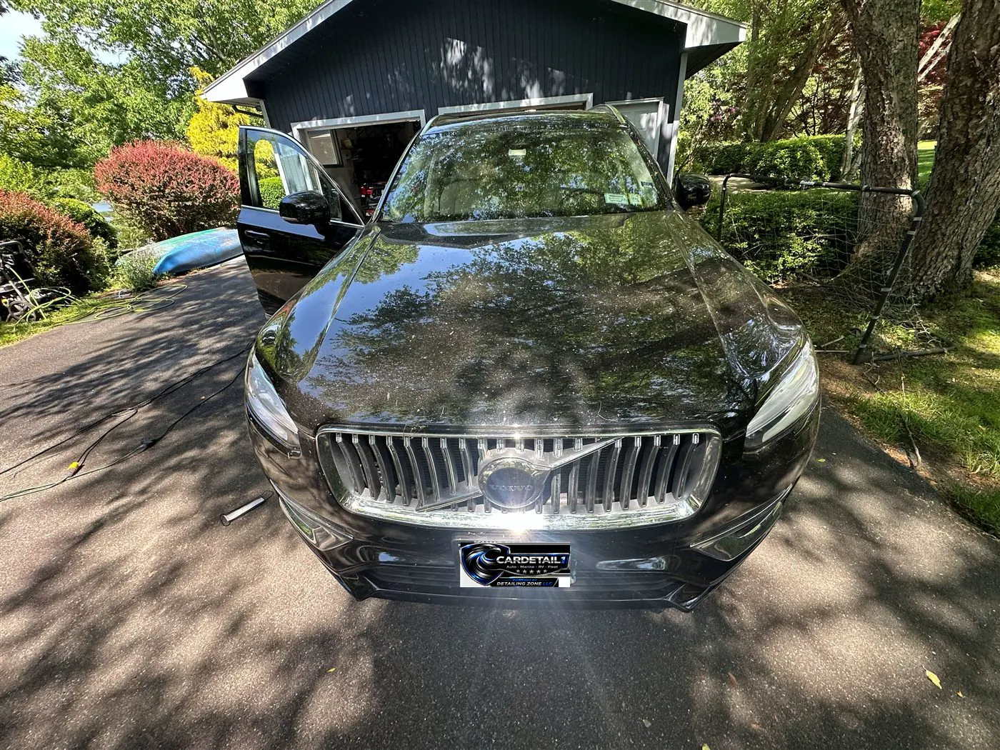

A homepage não muda com esta prévia. A–D exploram a foto de grupo em tamanho maior. E–H mantêm a mesma informação numa faixa baixa, para a página continuar fácil de rolar. A foto de grupo é o Urus branco com dois Porsches; nos modelos compactos ela entra inteira, sem esticar.
Modelo A
Poster central
A foto de grupo fica inteira e centralizada. No desktop ela não estica até as bordas, para não ocupar a tela toda. O carrossel vem abaixo, uma foto por vez.
Before & after


BeforeAfter
Subaru Crosstrek


BeforeAfter
GMC Terrain
Foto de grupo

Outros trabalhos
Porsche
Modelo B
Palco na largura da página
A foto usa a largura do conteúdo e a altura segue a proporção. Os três carros continuam inteiros, sem corte e sem esticar. No desktop este modelo fica mais alto que o A.
Before & after
BeforeAfter
Subaru Crosstrek
BeforeAfter
GMC Terrain
Foto de grupo
Outros trabalhos
Porsche
Modelo C
Grupo ao lado do carrossel
No desktop a foto de grupo e o carrossel dividem a mesma faixa, então a página cresce menos. No celular um fica embaixo do outro. Os três carros continuam inteiros.
Before & after
BeforeAfter
Subaru Crosstrek
BeforeAfter
GMC Terrain
Foto de grupo e outros trabalhos
Porsche
Modelo D
Foto grande e miniaturas
A foto de grupo é o único bloco alto. Porsche, Lamborghini e os outros trabalhos ficam numa faixa baixa, sem um segundo carrossel grande.
Before & after
BeforeAfter
Subaru Crosstrek
BeforeAfter
GMC Terrain
Foto de grupo
Outros trabalhos
Porsche
Urus
Porsche

Jayco

Gator
Mais compactos — uma faixa, não uma página
Modelo E
Uma linha só
Comparador, grupo e um trabalho finalizado na mesma altura. No celular aparece um cartão por vez, com os botões. A página ganha cerca de 250px, não uma tela.
BeforeAfter
Subaru
Grupo
Três veículos
Porsche
Modelo F
Abas
Só um painel fica aberto. Alternar entre antes/depois e trabalhos não aumenta a rolagem.
BeforeAfter
BeforeAfter


BeforeAfter
Grupo
Modelo G
Faixa baixa
Tudo numa fita de menos de 180px. As setas movem a faixa; a página em si quase não cresce.
Antes / depoisGrupo
Porsche
Urus
PorscheJayco
Modelo H
Um quadro
Uma imagem por vez, altura fixa. Os botões trocam entre comparar, o grupo e os trabalhos. Nada fica empilhado.